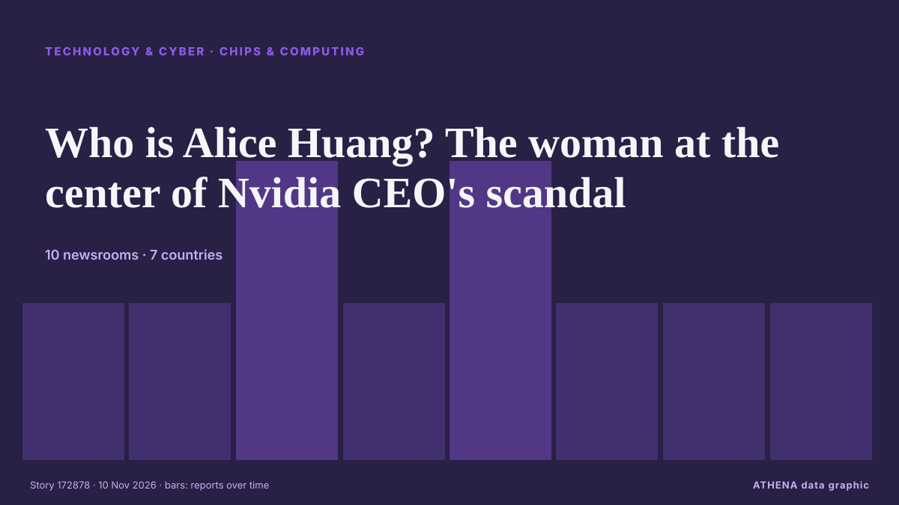

Technologie, IA et cybersécurité
SponsoriséPrésenté par  Cybernetics and Artificial Intelligence Lab Welcome to the Cybernetics and Artificial Intelligence Laboratory, established at the Department of Business Administration of the National and Kapodistrian University of Athens. The lab is headed by Professor Dimitrios Thomakos. The lab aims to do research that can be published in top venues. Our research uses tools and methods of Artificial Intelligence, and lies in the following areas: - Forecasting - Decision making - Cyber security - Finance We are always looking forward to collaborating with exceptional students!
Cybernetics and Artificial Intelligence Lab Welcome to the Cybernetics and Artificial Intelligence Laboratory, established at the Department of Business Administration of the National and Kapodistrian University of Athens. The lab is headed by Professor Dimitrios Thomakos. The lab aims to do research that can be published in top venues. Our research uses tools and methods of Artificial Intelligence, and lies in the following areas: - Forecasting - Decision making - Cyber security - Finance We are always looking forward to collaborating with exceptional students!
Les titres sont affichés en anglais, tels que publiés.

Puces et calculWho is Alice Huang? The woman at the center of Nvidia CEO's scandal
Of the top ten richest people, Nvidia CEO Jensen Huang is the only one who lost money on Monday. de Forbes Business
| 28 oct. | 88 |
|---|---|
| 29 oct. | 89 |
| 30 oct. | 80 |
| 31 oct. | 34 |
| 1 nov. | 48 |
| 2 nov. | 111 |
| 3 nov. | 102 |
| 4 nov. | 99 |
| 5 nov. | 112 |
| 6 nov. | 54 |
| 7 nov. | 36 |
| 8 nov. | 38 |
| 9 nov. | 58 |
| 10 nov. | 0 |
Citing government pressure, Russia's top independent newspaper closes its office after three decades
Novaya Gazeta was the last major independent media outlet critical of the Kremlin that remained active in Russia. de PBS NewsHour World
Democrats-controlled Congress gets first post-'Blue Wave' crack at data centres with permitting bill
Permitting bill is US Congress' most viable option this year to tackle backlash over AI data centres and the measure would require them to pay more of the cost of grid and transmission upgrades. de TRT World
Nvidia's shares slide as chip giant probes CEO Jensen Huang over spy claims
Huang says he had an affair; the company’s board is launching an investigation. de The Business Times
Hackers Claim Leaked Rosstat Data Shows 450,000 Russian Deaths
Cyber groups Belarusian Cyberpartisans and Silent Crow have claimed that exfiltrated records from Russia’s State Statistics Service (Rosstat) indicate between 394,000 and 450,000 deaths linked to the… de Kyiv Post
Anthropic unveils new Fable, Mythos models as competition heats up ahead of IPO
Anthropic is announcing two new models today: Claude Fable 5.2 and Claude Mythos 5.2, which it says are designed to take on "daunting" technical challenges. de The Verge
Royal Navy launches first autonomous squadron of uncrewed vessels
Royal Navy launches first autonomous squadron at Portsmouth, deploying uncrewed boats for frontline surveillance, reconnaissance and force protection operations. de The Herald (Scotland)
French officials blame Iran for refrigerator hacks, vow retaliation
By Raphael Satter and Gabriel Stargardter PARIS, Nov 9 (Reuters) - French officials on Monday accused Iran's Revolutionary Guards of responsibility for the cyberattacks that knocked outcommercial… de Al-Monitor
Nvidia shares slide amid spy claims
Nvidia shares plunged more than eight per cent as Wall Street opened on Monday after a spying scandal involving chief executive Jensen Huang threatened to derail the chipmaker’s recovery from last… de City A.M.
NASA is looking for astronauts to live and work on the Moon
NASA needs more recruits in order to return to the moon after being gone more than half a century. de NPR
Spanish investigators slam TikTok’s inaction on child abuse
A Spanish anti-disinformation foundation accused TikTok on Monday of not doing enough to prevent paedophiles from accessing child sexual abuse material or soliciting images from children on the… de The Local Spain
Norway reins in data centre industry amid AI boom
Norway’s government said on Monday it will curb the rapid growth of power-hungry data centres in the Nordic country, becoming the latest nation to limit a buildout driven by the global artificial… de Cyprus Mail
Megaspeed chip smuggling probe puts Nvidia NCP certification under scrutiny
Nvidia CEO Jensen Huang appears to have become a target of Chinese intelligence activity, while his admission of an extramarital affair has drawn attention to his relationship with a former female… de DigiTimes Asia
SpaceXAI started Southaven data center construction without water permits, state alleges. Fines could exceed $6M
SpaceXAI could face fines of over $6 million for allegedly violating state water pollution laws at its Southaven data center facilities. de Mississippi Today
Google to introduce two variants of in-house chips, reports
Alphabet’s Google is introducing two new variations of its in-house tensor processing units, Bloomberg News reported on Monday. de Business Recorder
Fahmi: Malaysia considers accelerating quantum migration to boost data security
DOHA: Malaysia is considering accelerating its quantum migration process to strengthen national data security amid advances in quantum computing technology that are expected to pose new challenges to… de New Straits Times
Apple Intelligence AI service registers with Chinese regulator for use on tablets, laptops
China requires companies to register large language models and generative AI services with regulators before making them available to the public. de The Business Standard (Bangladesh) (working feed)
Mumbai Bans Rockets, Aerial Crackers Till November 25 After Diwali Fires
Three major fires were reported in different parts of the city on Diwali night alone, gutting several huts, shops, a garage, and parts of a commercial building. de NDTV
Iranian news agency seeks media deal in Cyprus
Iran’s state news agency IRNA is exploring a cooperation agreement with Cypriot media outlets, its managing director Hossein Jaberi-Ansari told Tehran’s newly appointed ambassador to Cyprus. de Cyprus Mail
Web3Auth says it frontran hackers by moving $5.6 million out of exposed Keplr wallets
Web3Auth's communications also referred to an "original attacker," suggesting some funds were stolen, but did not elaborate. de The Block
DeepSeek’s AI agent platform hits 1.54 million daily users
The Chinese AI disruptor continues to challenge Anthropic and OpenAI with an entire swath of applications built around open-source AI technologies. de Free Malaysia Today
Revolut enters Irish mobile phone market with introductory €9.99 per month offer
Revolut said its mobile phone plan ‘challenges outdated industry trends’. de TheJournal.ie
When Jack Grealish could return for Everton as training plan emerges after new update
Jack Grealish has missed Everton's last four matches - but David Moyes confirmed earlier this week that he will be working with the winger soon. de Liverpool Echo
Environmental groups embrace AI, even as they warn of data center impacts
15 environmental groups use AI but warn of data centres' heavy electricity and water demands. de Express Tribune
A Pakistani brand's journey into China's market at CIIE
CIIE highlights China's market appeal and opening up. de CGTN (China)
AI companies scramble to navigate a world hostile to data centres
Would-be data-center builders weigh their options. de New Zealand Herald
Pakistan-built robots serve taste of future to Karachi diners
Robia and her colleague Jojo are the DIY creations of Pakistani engineer Syed Osama Aziz, who is bringing a sci-fi reboot to Karachi's storied dining scene. de The Business Standard (Bangladesh) (working feed)
DOJ Creates 'Super Intelligence' Task Force to Guard Against AI Abuse
Led by two senior DOJ officials, the Super Intelligence Task Force will target misuse by foreign governments, criminal groups and fraudsters—while pushing AI developers to tighten internal controls… de Decrypt
The M6 MacBook Pro is probably the last of its kind
On November 6th, Apple will release an all-new MacBook Pro. de The Verge
Can't cook or shower: Indonesians take aim at data centres
Indonesia and Malaysia face growing frustration over tech facilities near Singapore. de Express Tribune
Protesters storm site of Microsoft’s planned Amsterdam data centre
Activists in Amsterdam have stormed the site of a proposed Microsoft data centre. de Al Jazeera English
Microsoft is winding down Oracle deal to rent AI cloud capacity: Report
US stocks are giving back some of their gains as a report circulates that Microsoft is winding down an arrangement with Oracle for AI cloud capacity. de investingLive (ForexLive)
Iran-Linked Ships Hover Over Subsea Cables in Gulf of Oman
Ships linked to Iran looped, loitered and went dark over undersea internet cables in the Gulf of Oman in the weeks after Tehran threatened the region’s digital infrastructure, the Financial Times… de Iran International (English)
Europe supermarket fridge hack: An interactive graphic explainer
Nobody knows who hacked Europe's supermarkets. de Politico Europe
Google acquires Wyoming data center site
Google has acquired Crusoe’s data center site in southeast Wyoming, the AI infrastructure developer said on Friday, a day after the Alphabet (GOOGL.O), opens new tab unit announced a $17-billion… de FBC News